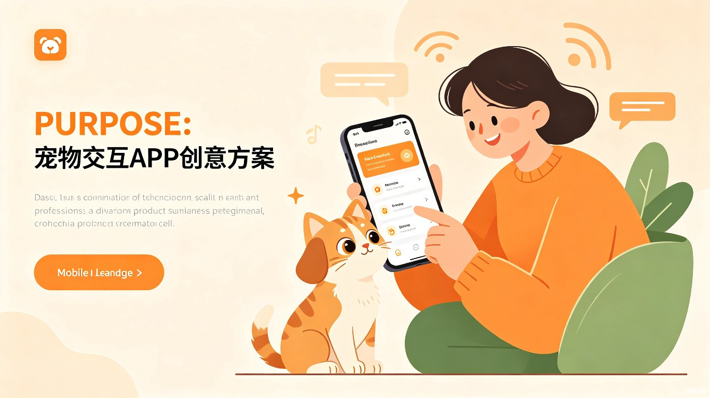

💬解决什么问题
宠物时常无法理解主人的语言指令，导致日常喂养、训练中存在沟通障碍。本产品通过智能语音识别与宠物行为分析技术，将人类语言转化为宠物可理解的音频信号与视觉提示，实现人宠双向沟通。
📱产品形态
平台
App / 小程序
目标用户
专注喂养小动物的用户
🐾目标用户及痛点
专注喂养小动物的用户在日常与宠物互动时，常常面临宠物不能理解人类的语言动作的困扰。无论是喂食提醒、行为纠正还是情感交流，都存在明显的沟通断层。
❤价值与意义
让人和动物更能友好、正常生活。通过科技赋能，搭建人宠之间的高效沟通桥梁，提升宠物养护质量，增进人宠情感纽带。
💡创意来源
灵感来自日常生活中宠物有的时候理解不了人类的语言动作，导致主人与宠物之间产生误解和互动障碍，因此希望借助技术手段解决这一痛点。
🏠使用场景
专注于喂养小动物的场景。适用于猫咪、狗狗等常见宠物的日常喂养、训练引导、行为纠正及情感陪伴等多种场景。
⚙核心功能
语音转宠物语
将主人语音转换为宠物可识别的音频频率
行为识别分析
智能识别宠物行为，解读宠物情绪状态
视觉信号引导
通过屏幕动画引导宠物完成特定动作
训练课程库
提供科学的宠物训练教程与互动游戏
让每一次互动都充满理解与爱意，打造真正的人宠互通世界。